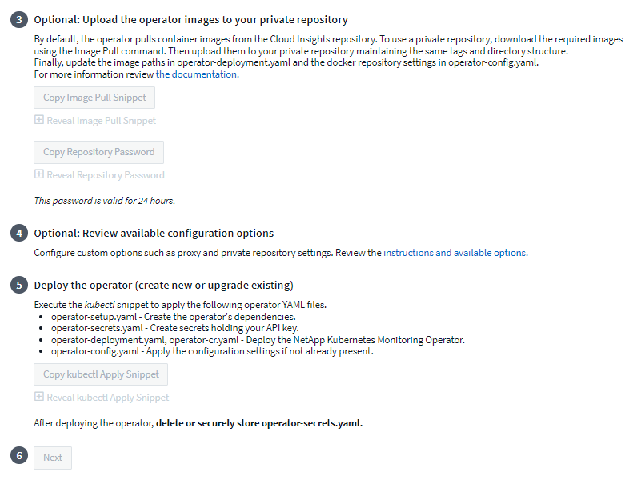
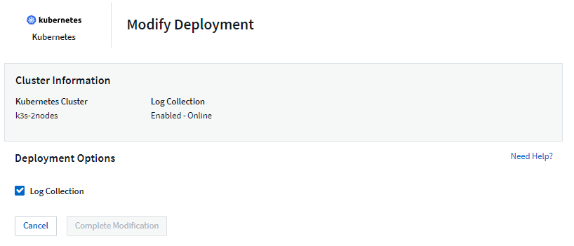

Sicherheit
Sicherheit
Konfiguration des NetApp Kubernetes Monitoring Operator
 Änderungen vorschlagen
Änderungen vorschlagen
- Vor der Installation des NetApp Kubernetes Monitoring Operator
- Installation des NetApp Kubernetes Monitoring Operator
- Aktualisierung
- Stoppen und Starten des NetApp Kubernetes Monitoring Operator
- Deinstallation
- Über Kube-State-Metrics
- Ein Hinweis über Geheimnisse
- Überprüfen Von Kubernetes Prüfsummen
- Fehlerbehebung
Cloud Insights bietet die Sammlung NetApp Kubernetes Monitoring Operator (NKMO) für Kubernetes an. Wählen Sie beim Hinzufügen eines Datensammlers einfach die Kachel „Kubernetes“.

|
Wenn Sie Cloud Insights Federal Edition besitzen, können Ihre Installations- und Konfigurationsanweisungen von den Anweisungen auf dieser Seite abweichen. Befolgen Sie die Anweisungen unter Cloud Insights, um den NetApp Kubernetes Monitoring Operator zu installieren. |

Der Betreiber und die Datensammler werden von der Cloud Insights Docker Registry heruntergeladen. Nach der Installation verwaltet NKMO dann alle Operator-kompatiblen Kollektoren, die in den Kubernetes-Cluster-Knoten zur Datengewinnung bereitgestellt werden, einschließlich der Verwaltung des Lebenszyklus dieser Kollektoren. Nach dieser Kette werden die Daten von den Sammlern erfasst und an Cloud Insights gesendet.
Vor der Installation des NetApp Kubernetes Monitoring Operator

|
Lesen Sie die "Vor der Installation oder Aktualisierung" Dokumentation vor der Installation oder dem Upgrade des NetApp Kubernetes Monitoring Operator. |
Installation des NetApp Kubernetes Monitoring Operator

-
Geben Sie einen eindeutigen Cluster-Namen und einen eindeutigen Namespace ein. Wenn Sie es sind Aktualisierung Verwenden Sie aus einem früheren Kubernetes-Operator den gleichen Cluster-Namen und Namespace.
-
Sobald diese eingegeben wurden, können Sie den Download-Befehl-Snippet in die Zwischenablage kopieren.
-
Fügen Sie das Snippet in ein bash Fenster ein und führen Sie es aus. Die Installationsdateien des Bedieners werden heruntergeladen. Beachten Sie, dass das Snippet einen eindeutigen Schlüssel hat und für 24 Stunden gültig ist.
-
Wenn Sie ein benutzerdefiniertes oder privates Repository haben, kopieren Sie das optionale Bild-Pull-Snippet, fügen Sie es in eine bash-Shell ein und führen Sie es aus. Nachdem die Bilder gezogen wurden, kopieren Sie sie in Ihr privates Repository. Stellen Sie sicher, dass Sie dieselben Tags und Ordnerstrukturen beibehalten. Aktualisieren Sie die Pfade in Operator-Deployment.yaml sowie die Einstellungen des Docker-Repository in Operator-config.yaml.
-
Prüfen Sie bei Bedarf die verfügbaren Konfigurationsoptionen, z. B. Proxy- oder private Repository-Einstellungen. Sie können mehr über lesen "Konfigurationsoptionen".
-
Wenn Sie bereit sind, stellen Sie den Operator bereit, indem Sie den kubectl Apply-Snippet kopieren, herunterladen und ausführen.
-
Die Installation wird automatisch ausgeführt. Klicken Sie anschließend auf die Schaltfläche „Next“.
-
Wenn die Installation abgeschlossen ist, klicken Sie auf die Schaltfläche „Next“. Achten Sie darauf, auch die Datei Operator-Secrets.yaml zu löschen oder sicher zu speichern.
Weitere Informationen Proxy wird konfiguriert.
Weitere Informationen Ein benutzerdefiniertes/privates Docker-Repository verwenden.
Die Kubernetes EMS-Protokollerfassung ist standardmäßig aktiviert, wenn Sie den NetApp Kubernetes Monitoring Operator installieren. Um diese Sammlung nach der Installation zu deaktivieren, klicken Sie oben auf der Detailseite des Kubernetes-Clusters auf die Schaltfläche Bereitstellung ändern, und heben Sie die Auswahl von „Protokollsammlung“ auf.

Dieser Bildschirm zeigt auch den aktuellen Status der Protokollerfassung an. Im Folgenden sind die möglichen Zustände aufgeführt:
-
Deaktiviert
-
Aktiviert
-
Aktiviert – Installation wird ausgeführt
-
Aktiviert – Offline
-
Aktiviert – Online
-
Fehler: API-Schlüssel verfügt über unzureichende Berechtigungen
Aktualisierung
Upgrade auf den aktuellen NetApp Kubernetes Monitoring Operator
Ermitteln Sie, ob eine AgentConfiguration bei dem vorhandenen Operator vorhanden ist (wenn Ihr Namespace nicht der Standardwert netapp-Monitoring ist, ersetzen Sie den entsprechenden Namespace):
kubectl -n netapp-monitoring get agentconfiguration netapp-monitoring-configuration Wenn eine AgentConfiguration vorhanden ist:
-
Installieren Der letzte Operator über den vorhandenen Operator.
-
Stellen Sie sicher, dass Sie es sind Die neuesten Container-Bilder werden angezeigt Wenn Sie ein benutzerdefiniertes Repository verwenden.
-
Wenn AgentConfiguration nicht vorhanden ist:
-
Notieren Sie sich den von Cloud Insights erkannten Cluster-Namen (wenn Ihr Namespace nicht der standardmäßige netapp-Monitoring ist, ersetzen Sie den entsprechenden Namespace):
kubectl -n netapp-monitoring get agent -o jsonpath='{.items[0].spec.cluster-name}' * Erstellen Sie eine Sicherung des bestehenden Operators (wenn Ihr Namespace nicht der Standard-netapp-Überwachung ist, ersetzen Sie den entsprechenden Namespace):kubectl -n netapp-monitoring get agent -o yaml > agent_backup.yaml * <<to-remove-the-netapp-kubernetes-monitoring-operator,Deinstallieren>> Der vorhandene Operator. * <<installing-the-netapp-kubernetes-monitoring-operator,Installieren>> Der neueste Operator.
-
Verwenden Sie denselben Cluster-Namen.
-
Nachdem Sie die neuesten Operator YAML-Dateien heruntergeladen haben, können Sie alle in Agent_Backup.yaml gefundenen Anpassungen vor der Bereitstellung an den heruntergeladenen Operator-config.yaml übertragen.
-
Stellen Sie sicher, dass Sie es sind Die neuesten Container-Bilder werden angezeigt Wenn Sie ein benutzerdefiniertes Repository verwenden.
-
Stoppen und Starten des NetApp Kubernetes Monitoring Operator
So beenden Sie den NetApp Kubernetes Monitoring Operator:
kubectl -n netapp-monitoring scale deploy monitoring-operator --replicas=0 So starten Sie den NetApp Kubernetes Monitoring Operator:
kubectl -n netapp-monitoring scale deploy monitoring-operator --replicas=1
Deinstallation
Um den NetApp Kubernetes Monitoring Operator zu entfernen
Beachten Sie, dass der Standard-Namespace für den NetApp Kubernetes Monitoring Operator „netapp-Monitoring“ ist. Wenn Sie Ihren eigenen Namespace festgelegt haben, ersetzen Sie diesen Namespace in diesen und allen nachfolgenden Befehlen und Dateien.
Neuere Versionen des Überwachungsoperators können mit den folgenden Befehlen deinstalliert werden:
kubectl -n <NAMESPACE> delete agent -l installed-by=nkmo-<NAMESPACE> kubectl -n <NAMESPACE> delete clusterrole,clusterrolebinding,crd,svc,deploy,role,rolebinding,secret,sa -l installed-by=nkmo-<NAMESPACE>
Wenn der Überwachungsoperator in seinem eigenen dedizierten Namespace bereitgestellt wurde, löschen Sie den Namespace:
kubectl delete ns <NAMESPACE> Wenn der erste Befehl „Keine Ressourcen gefunden“ zurückgibt, verwenden Sie die folgenden Anweisungen, um ältere Versionen des Überwachungsoperators zu deinstallieren.
Führen Sie jeden der folgenden Befehle in der Reihenfolge aus. Abhängig von Ihrer aktuellen Installation können einige dieser Befehle Nachrichten ‘object not found’ zurückgeben. Diese Meldungen können sicher ignoriert werden.
kubectl -n <NAMESPACE> delete agent agent-monitoring-netapp kubectl delete crd agents.monitoring.netapp.com kubectl -n <NAMESPACE> delete role agent-leader-election-role kubectl delete clusterrole agent-manager-role agent-proxy-role agent-metrics-reader <NAMESPACE>-agent-manager-role <NAMESPACE>-agent-proxy-role <NAMESPACE>-cluster-role-privileged kubectl delete clusterrolebinding agent-manager-rolebinding agent-proxy-rolebinding agent-cluster-admin-rolebinding <NAMESPACE>-agent-manager-rolebinding <NAMESPACE>-agent-proxy-rolebinding <NAMESPACE>-cluster-role-binding-privileged kubectl delete <NAMESPACE>-psp-nkmo kubectl delete ns <NAMESPACE>
Wenn zuvor eine Sicherheitskontextbeschränkung erstellt wurde:
kubectl delete scc telegraf-hostaccess
Über Kube-State-Metrics
Der NetApp Kubernetes Monitoring Operator installiert kube-State-Metriken automatisch. Gleichzeitig ist keine Interaktion mit den Benutzern erforderlich.
kube-State-Metrics Counters
Verwenden Sie die folgenden Links, um auf Informationen zu diesen kube State-Metriken zuzugreifen:
== Configuring the Operator In neueren Versionen des Operators können die am häufigsten geänderten Einstellungen in der benutzerdefinierten Ressource _AgentConfiguration_ konfiguriert werden. Sie können diese Ressource bearbeiten, bevor Sie den Operator bereitstellen, indem Sie die Datei _Operator-config.yaml_ bearbeiten. Diese Datei enthält kommentierte Beispiele für einige Einstellungen. Siehe Liste von link:telegraf_agent_k8s_config_options.html["Verfügbare Einstellungen"] Für die neueste Version des Bedieners.
Sie können diese Ressource auch bearbeiten, nachdem der Operator bereitgestellt wurde. Verwenden Sie dazu den folgenden Befehl:
kubectl -n netapp-monitoring edit AgentConfiguration Um festzustellen, ob die bereitgestellte Version des Operators AgentConfiguration unterstützt, führen Sie den folgenden Befehl aus:
kubectl get crd agentconfigurations.monitoring.netapp.com Wenn die Meldung „Fehler vom Server (notfound)“ angezeigt wird, muss Ihr Bediener aktualisiert werden, bevor Sie die AgentConfiguration verwenden können.
Proxy-Unterstützung Wird Konfiguriert
An zwei Stellen können Sie in Ihrer Umgebung einen Proxy verwenden, um den NetApp Kubernetes Monitoring Operator zu installieren. Es kann sich um dieselben oder separate Proxy-Systeme handelt:
-
Proxy benötigt bei Ausführung des Installationscodes Snippet (mit "Curl"), um das System, an dem das Snippet ausgeführt wird, mit Ihrer Cloud Insights-Umgebung zu verbinden
-
Proxy für die Kommunikation mit Ihrer Cloud Insights Umgebung durch das Ziel-Kubernetes-Cluster
Wenn Sie einen Proxy für diesen oder beide verwenden, müssen Sie für die Installation des NetApp Kubernetes Operating Monitor zunächst sicherstellen, dass Ihr Proxy konfiguriert ist und eine gute Kommunikation mit Ihrer Cloud Insights-Umgebung ermöglicht. Wenn Sie über einen Proxy verfügen und über den Server/die VM auf Cloud Insights zugreifen können, von dem aus Sie den Operator installieren möchten, wird Ihr Proxy wahrscheinlich richtig konfiguriert.
Legen Sie für den Proxy, der zur Installation des NetApp Kubernetes Operating Monitor verwendet wurde, vor der Installation des Operators die Umgebungsvariablen http_Proxy/https_Proxy fest. In einigen Proxy-Umgebungen müssen Sie möglicherweise auch die Variable no_Proxy Environment festlegen.
Um die Variable(en) festzulegen, führen Sie auf Ihrem System vor der Installation des NetApp Kubernetes Monitoring Operators folgende Schritte aus:
-
Legen Sie die Umgebungsvariable https_Proxy und/oder http_Proxy für den aktuellen Benutzer fest:
-
Wenn der Proxy, der eingerichtet wird, keine Authentifizierung (Benutzername/Passwort) aufweist, führen Sie den folgenden Befehl aus:
export https_proxy=<proxy_server>:<proxy_port> .. Wenn der Proxy, der eingerichtet wird, über Authentifizierung (Benutzername/Passwort) verfügt, führen Sie folgenden Befehl aus:
export http_proxy=<proxy_username>:<proxy_password>@<proxy_server>:<proxy_port>
-
Nachdem Sie alle diese Anweisungen gelesen haben, installieren Sie den Proxy, der für die Kommunikation Ihres Kubernetes Clusters mit Ihrer Cloud Insights-Umgebung verwendet wurde.
Konfigurieren Sie den Proxy-Abschnitt von AgentConfiguration in Operator-config.yaml, bevor Sie den NetApp Kubernetes Monitoring Operator bereitstellen.
agent:
...
proxy:
server: <server for proxy>
port: <port for proxy>
username: <username for proxy>
password: <password for proxy>
# In the noproxy section, enter a comma-separated list of
# IP addresses and/or resolvable hostnames that should bypass
# the proxy
noproxy: <comma separated list>
isTelegrafProxyEnabled: true
isFluentbitProxyEnabled: <true or false> # true if Events Log enabled
isCollectorsProxyEnabled: <true or false> # true if Network Performance and Map enabled
isAuProxyEnabled: <true or false> # true if AU enabled
...
...
Verwenden eines benutzerdefinierten oder privaten Docker Repositorys
Standardmäßig sendet der NetApp Kubernetes Monitoring Operator Container-Images aus dem Cloud Insights-Repository. Wenn Sie ein Kubernetes-Cluster als Ziel für das Monitoring verwenden und der Cluster so konfiguriert ist, dass er nur Container-Images aus einem benutzerdefinierten oder privaten Docker-Repository oder der Container-Registrierung zieht, müssen Sie den Zugriff auf die Container konfigurieren, die vom NetApp Kubernetes Monitoring Operator benötigt werden.
Führen Sie das „Image Pull Snippet“ aus der NetApp Monitoring Operator Installationskachel aus. Dieser Befehl meldet sich beim Cloud Insights-Repository an, zieht alle Image-Abhängigkeiten für den Operator und meldet sich vom Cloud Insights-Repository ab. Wenn Sie dazu aufgefordert werden, geben Sie das angegebene temporäre Repository-Passwort ein. Mit diesem Befehl werden alle vom Bediener verwendeten Bilder heruntergeladen, einschließlich optionaler Funktionen. Nachfolgend sehen Sie, für welche Funktionen diese Bilder verwendet werden.
Core Operator-Funktionalität und Kubernetes Monitoring
-
netapp Monitoring
-
ci-kube-rbac-Proxy
-
ci-ksm
-
ci-telegraf
-
Distroless-root-user
Ereignisprotokoll
-
ci-Fluent-Bit
-
ci-kubernetes-Event-Exporteur
Netzwerkleistung und -Zuordnung
-
ci-Netz-Beobachter
Übertragen Sie das Operator-Docker-Image gemäß Ihren Unternehmensrichtlinien in das private/lokale/unternehmenseigene Docker-Repository. Stellen Sie sicher, dass die Bild-Tags und Verzeichnispfade zu diesen Bildern in Ihrem Repository mit denen im Cloud Insights-Repository übereinstimmen.
Bearbeiten Sie die Bereitstellung des Monitoring-Operators in Operator-Deployment.yaml, und ändern Sie alle Bildverweise, um Ihr privates Docker-Repository zu verwenden.
image: <docker repo of the enterprise/corp docker repo>/kube-rbac-proxy:<ci-kube-rbac-proxy version> image: <docker repo of the enterprise/corp docker repo>/netapp-monitoring:<version>
Bearbeiten Sie die AgentConfiguration in Operator-config.yaml, um die neue Position des Docker-Repo zu berücksichtigen. Erstellen Sie ein neues imagePullSecret für Ihr privates Repository. Weitere Informationen finden Sie unter https://kubernetes.io/docs/tasks/configure-pod-container/pull-image-private-registry/
agent: ... # An optional docker registry where you want docker images to be pulled from as compared to CI's docker registry # Please see documentation link here: https://docs.netapp.com/us-en/cloudinsights/task_config_telegraf_agent_k8s.html#using-a-custom-or-private-docker-repository dockerRepo: your.docker.repo/long/path/to/test # Optional: A docker image pull secret that maybe needed for your private docker registry dockerImagePullSecret: docker-secret-name
OpenShift-Anweisungen
Wenn Sie OpenShift 4.6 oder höher ausführen, müssen Sie die AgentConfiguration in Operator-config.yaml bearbeiten, um die Einstellung runPrivileged zu aktivieren:
# Set runPrivileged to true SELinux is enabled on your kubernetes nodes runPrivileged: true
OpenShift kann zusätzliche Sicherheitsstufen implementieren, die den Zugriff auf einige Kubernetes-Komponenten blockieren könnten.
Ein Hinweis über Geheimnisse
Löschen Sie die folgenden Ressourcen aus der Datei Operator-Setup.yaml, um die Berechtigung für den NetApp-Kubernetes-Überwachungsoperator zu entfernen, um die Geheimnisse im gesamten Cluster anzuzeigen:
ClusterRole/netapp-ci-<namespace>-agent-secret-clusterrole ClusterRoleBinding/netapp-ci-<namespace>-agent-secret-clusterrolebinding
Wenn es sich um ein Upgrade handelt, löschen Sie auch die Ressourcen aus Ihrem Cluster:
kubectl delete ClusterRole/netapp-ci-<namespace>-agent-secret-clusterrole kubectl delete ClusterRoleBinding/netapp-ci-<namespace>-agent-secret-clusterrolebinding
Wenn die Änderungsanalyse aktiviert ist, ändern Sie die Optionen AgentConfiguration oder Operator-config.yaml, um den Änderungsmanagementabschnitt zu entkommentieren und kindsToIgnoreFromWatch: '"Secrets" im Bereich Change-Management aufzunehmen. Notieren Sie sich das Vorhandensein und die Position von einfachen und doppelten Anführungszeichen in dieser Zeile.
# change-management: ... # # A comma separated list of kinds to ignore from watching from the default set of kinds watched by the collector # # Each kind will have to be prefixed by its apigroup # # Example: '"networking.k8s.io.networkpolicies,batch.jobs", "authorization.k8s.io.subjectaccessreviews"' kindsToIgnoreFromWatch: '"secrets"' ...
Überprüfen Von Kubernetes Prüfsummen
Das Cloud Insights Agent-Installationsprogramm führt Integritätsprüfungen durch. Einige Benutzer müssen jedoch vor der Installation oder Anwendung heruntergeladener Artefakte möglicherweise ihre eigenen Überprüfungen durchführen. Um einen nur-Download-Vorgang durchzuführen (im Gegensatz zum Standard-Download-and-install), können diese Benutzer den Agent-Installation Befehl erhalten von der UI und entfernen Sie die nachhängbare "Installation" Option.
Führen Sie hierzu folgende Schritte aus:
-
Kopieren Sie das Agent Installer-Snippet wie angewiesen.
-
Anstatt das Snippet in ein Befehlsfenster einzufügen, fügen Sie es in einen Texteditor ein.
-
Entfernen Sie den nachfolgenden „--install“ aus dem Befehl.
-
Kopieren Sie den gesamten Befehl aus dem Texteditor.
-
Fügen Sie es nun in Ihr Befehlsfenster ein (in einem Arbeitsverzeichnis) und führen Sie es aus.
-
Download und Installation (Standard):
installerName=cloudinsights-rhel_centos.sh … && sudo -E -H ./$installerName --download –-install ** Nur Download:
installerName=cloudinsights-rhel_centos.sh … && sudo -E -H ./$installerName --download
-
Der Download-Only-Befehl lädt alle erforderlichen Artefakte vom Cloud Insights in das Arbeitsverzeichnis herunter. Die Artefakte umfassen, dürfen aber nicht beschränkt sein auf:
-
Ein Installationsskript
-
Einer Umgebungsdatei
-
YAML-Dateien
-
Eine signierte Prüfsumme-Datei (sha256.signed)
-
Eine PEM-Datei (netapp_cert.pem) zur Signaturverifizierung
Das Installationsskript, die Umgebungsdatei und die YAML-Dateien können mittels Sichtprüfung verifiziert werden.
Die PEM-Datei kann durch Bestätigung des Fingerabdrucks wie folgt verifiziert werden:
1A918038E8E127BB5C87A202DF173B97A05B4996 Genauer gesagt,
openssl x509 -fingerprint -sha1 -noout -inform pem -in netapp_cert.pem Die signierte Prüfsummendatei kann mit der PEM-Datei verifiziert werden:
openssl smime -verify -in sha256.signed -CAfile netapp_cert.pem -purpose any Sobald alle Artefakte zufriedenstellend überprüft wurden, kann die Agenteninstallation durch Ausführen von gestartet werden:
sudo -E -H ./<installation_script_name> --install
Fehlerbehebung
Einige Dinge, die Sie versuchen können, wenn Probleme bei der Einrichtung des NetApp Kubernetes Monitoring Operators auftreten:
| Problem: | Versuchen Sie dies: |
|---|---|
Ich sehe keinen Hyperlink/Verbindung zwischen meinem Kubernetes Persistent Volume und dem entsprechenden Back-End Storage-Gerät. Mein Kubernetes Persistent Volume wird mit dem Hostnamen des Storage-Servers konfiguriert. |
Befolgen Sie die Schritte, um den bestehenden Telegraf-Agent zu deinstallieren, und installieren Sie dann den neuesten Telegraf-Agent erneut. Sie müssen Telegraf Version 2.0 oder höher verwenden, und Ihr Kubernetes Cluster Storage muss von Cloud Insights aktiv überwacht werden. |
Ich sehe Nachrichten in den Protokollen, die folgendermaßen aussehen: |
Diese Nachrichten können auftreten, wenn Sie kube-State-Metrics Version 2.0.0 oder höher mit Kubernetes-Versionen unter 1.20 ausführen. |
Ich sehe Fehlermeldungen von Telegraf wie die folgenden, aber Telegraf startet und läuft: |
Dies ist ein bekanntes Problem. Siehe "Dieser GitHub-Artikel" Entnehmen. Solange Telegraf läuft, können Benutzer diese Fehlermeldungen ignorieren. |
Auf Kubernetes berichten meine Telegraf POD(s) die folgende Fehlermeldung: |
Wenn SELinux aktiviert und durchgesetzt wird, wird wahrscheinlich verhindert, dass die Telegraf PODs auf die Datei /proc/1/mountstats auf dem Kubernetes-Knoten zugreifen. Um diese Einschränkung zu überwinden, bearbeiten Sie die Agentkonfiguration und aktivieren Sie die runPrivileged-Einstellung. Weitere Informationen finden Sie unter: https://docs.netapp.com/us-en/cloudinsights/task_config_telegraf_agent_k8s.html#openshift-instructions. |
Auf Kubernetes meldet mein Telegraf ReplicaSet POD den folgenden Fehler: |
Der Pod Telegraf ReplicaSet soll auf einem Knoten ausgeführt werden, der als Master oder für etc bestimmt ist. Wenn der ReplicaSet-Pod auf einem dieser Knoten nicht ausgeführt wird, werden diese Fehler angezeigt. Überprüfen Sie, ob Ihre Master/etcd-Knoten eine Tönungswalle haben. Fügen Sie in diesem Fall die erforderlichen Verträgungen in das Telegraf ReplicaSet, telegraf-rs ein. |
Ich habe eine PSP/PSA Umgebung. Hat dies Auswirkungen auf meinen Überwachungsperator? |
Wenn Ihr Kubernetes Cluster mit der Pod Security Policy (PSP) oder PSA (Pod Security Admission) ausgeführt wird, müssen Sie ein Upgrade auf den aktuellen NetApp Kubernetes Monitoring Operator durchführen. Führen Sie die folgenden Schritte aus, um ein Upgrade auf das aktuelle NKMO mit Unterstützung für PSP/PSA durchzuführen: |
Bei der Bereitstellung des NKMO begegnete mir Probleme, und PSP/PSA ist im Einsatz. |
1. Bearbeiten Sie den Agenten mit dem folgenden Befehl: |
„ImagePullBackoff“-Fehler erkannt |
Diese Fehler treten möglicherweise auf, wenn Sie über ein benutzerdefiniertes oder privates Docker Repository verfügen und den NetApp Kubernetes Monitoring Operator noch nicht so konfiguriert haben, dass es richtig erkannt wird. Weitere Informationen Info zur Konfiguration für benutzerdefinierte/private Repo. |
Ich habe ein Problem mit der Installation meines Monitoring-Bedieners, und die aktuelle Dokumentation hilft mir nicht, es zu lösen. |
Erfassen oder notieren Sie die Ausgabe der folgenden Befehle, und wenden Sie sich an den technischen Support. kubectl -n netapp-monitoring get all kubectl -n netapp-monitoring describe all kubectl -n netapp-monitoring logs <monitoring-operator-pod> --all-containers=true kubectl -n netapp-monitoring logs <telegraf-pod> --all-containers=true |
NET-Observer (Workload Map)-Pods im NKMO-Namespace befinden sich in CrashLoopBackOff |
Diese Pods entsprechen dem Workload Map-Datensammler für Network Observability. Versuchen Sie Folgendes: |
Pods werden in NKMO Namespace ausgeführt (Standard: netapp-Monitoring), es werden jedoch keine Daten in der UI für die Workload-Zuordnung oder Kubernetes-Kennzahlen in Abfragen angezeigt |
Überprüfen Sie die Zeiteinstellung auf den Knoten des K8S-Clusters. Für eine genaue Prüfung und Datenberichterstattung wird dringend empfohlen, die Zeit auf dem Agent-Rechner mit Network Time Protocol (NTP) oder Simple Network Time Protocol (SNTP) zu synchronisieren. |
Einige der Net-Observer-Pods im NKMO-Namespace befinden sich im Status „Ausstehend“ |
NET-Observer ist ein DemonSet und führt in jedem Knoten des K8s-Clusters einen Pod aus. |
Ich sehe Folgendes in meinen Protokollen sofort nach der Installation des NetApp Kubernetes Monitoring Operators: |
Diese Meldung wird normalerweise nur angezeigt, wenn ein neuer Operator installiert ist und der Pod „telegraf-rs“ vor dem Einschalten des Pod „ksm“ steht. Diese Meldungen sollten beendet werden, sobald alle Pods ausgeführt werden. |
Ich sehe keine Kennzahlen für die Kubernetes-Kronjobs, die in meinem Cluster vorhanden sind, erfasst. |
Überprüfen Ihrer Kubernetes Version (d. h. |
Nach der Installation des Bedieners geben die telegraf-ds-Pods CrashLoopBackOff ein und die POD-Protokolle zeigen „su: Authentication failure“ an. |
Bearbeiten Sie den Abschnitt telegraf in AgentConfiguration, und setzen Sie dockerMetricCollectionEnabled auf false. Weitere Informationen finden Sie im Abschnitt des Bedieners "Konfigurationsoptionen". |
Ich sehe wiederholte Fehlermeldungen wie die folgenden in meinen Telegraf-Protokollen: |
Bearbeiten Sie den Abschnitt telegraf in AgentConfiguration, und setzen Sie dockerMetricCollectionEnabled auf false. Weitere Informationen finden Sie im Abschnitt des Bedieners "Konfigurationsoptionen". |
Ich vermisse involvedobject Daten für einige Event Logs. |
Stellen Sie sicher, dass Sie die Schritte im befolgt haben "Berechtigungen" Abschnitt oben. |
Wieso werden zwei Monitoring Operator Pods ausgeführt, einer mit dem Namen netapp-CI-Monitoring-Operator-<pod> und der andere mit dem Namen Monitoring-Operator-<pod>? |
Ab dem 12. Oktober 2023 hat Cloud Insights den Betreiber refaktorisiert, um unseren Nutzern besser zu dienen. Damit diese Änderungen vollständig übernommen werden, müssen Sie dies tun Entfernen Sie den alten Bediener Und Installieren Sie den neuen. |
Meine kubernetes-Ereignisse berichteten unerwartet nicht mehr an Cloud Insights. |
Rufen Sie den Namen des POD für den Event-Exporter ab: `kubectl -n netapp-monitoring get pods |
grep event-exporter |
awk '{print $1}' |
sed 's/event-exporter./event-exporter/'` |
Ich sehe POD(s), die von dem NetApp-Kubernetes-Monitoring-Operator aufgrund von unzureichenden Ressourcen bereitgestellt werden. |
Weitere Informationen finden Sie im "Unterstützung" Oder auf der "Data Collector Supportmatrix".